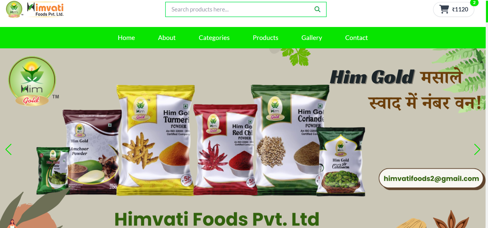
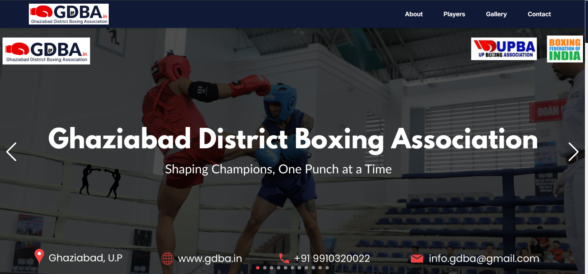
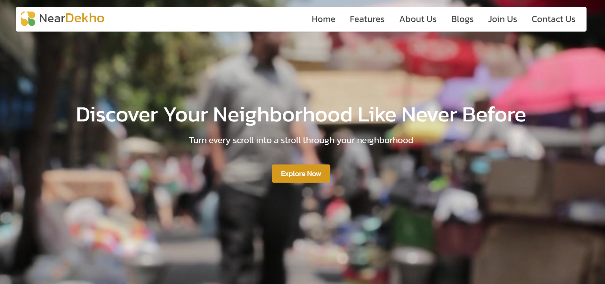
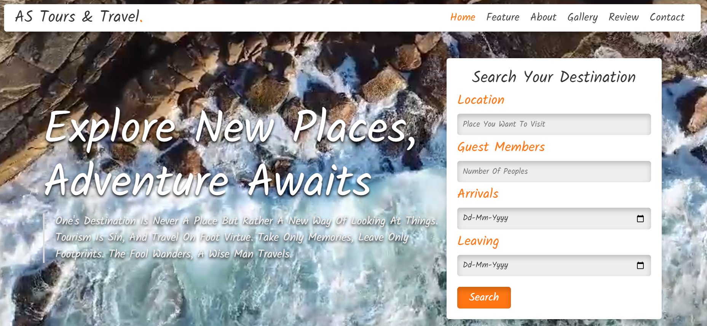
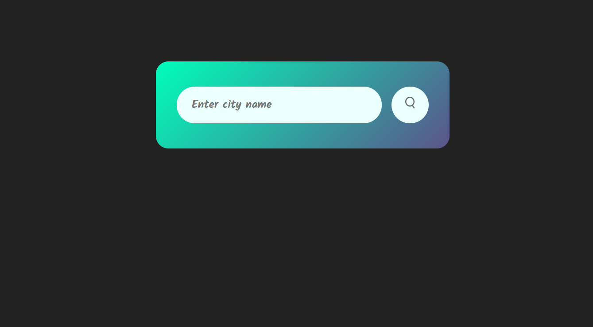
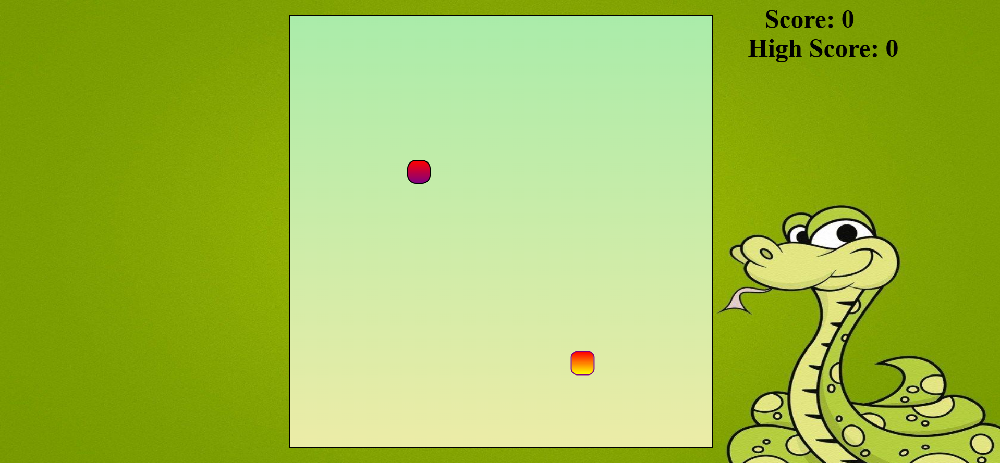
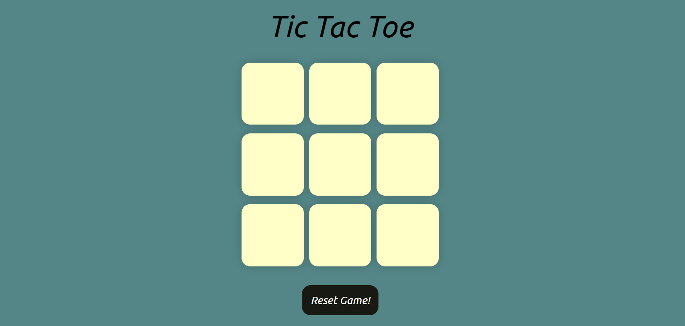
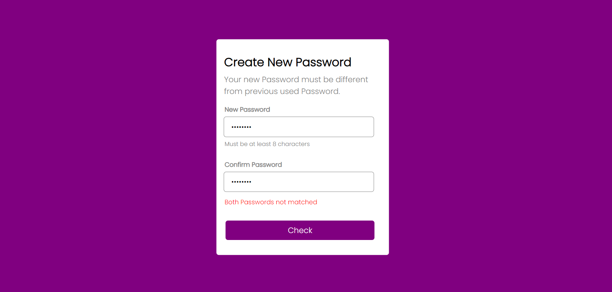
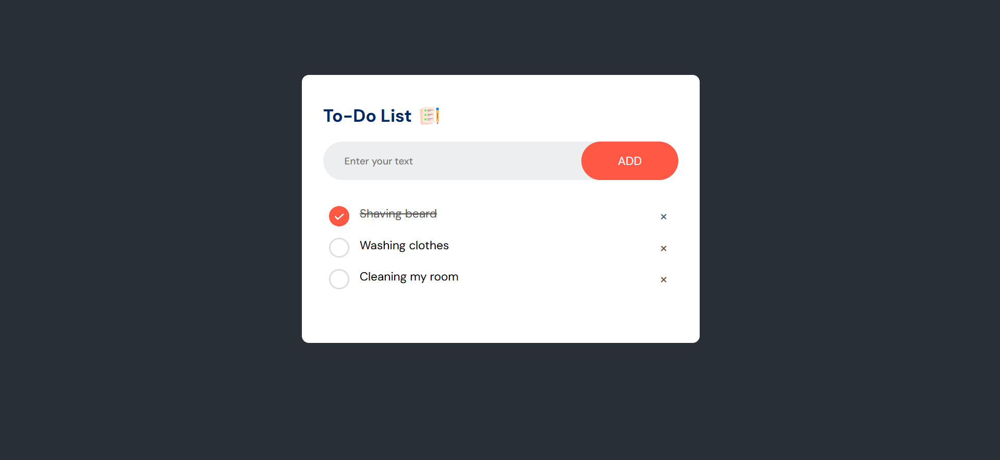

Himspices Website
HimSpices is a fully functional e-commerce website built from scratch to showcase and sell premium quality
spices. I developed both the frontend and backend independently, ensuring a seamless shopping experience. The
platform includes dynamic product listings, a responsive UI, cart and order features, and integration with
WhatsApp for order placement. It’s designed to be fast, mobile-friendly, and easy to manage.
Click to view
Source Code

Ghaziabad District Boxing Association
The GDBA website is a dynamic and responsive platform developed for the Ghaziabad District Boxing Association.
It showcases information about the organization, upcoming events, registered players, and achievements. I
designed and developed the entire website to provide a clean, user-friendly interface, complete with
interactive features like image carousels, modals, and a responsive gallery to ensure accessibility across all
devices.
Click to view
Source Code

NearDekho Website
NearDekho is a location-based website designed to help users
discover local businesses, services, and attractions in their area.
With a user-friendly interface, the platform allows users to search
for nearby shops, restaurants, landmarks, and more.
Click to view
Source Code

Tours and Travel Website
I developed an online tours and travel website designed to provide
users with a seamless and interactive experience for planning their
trips. The site offers detailed travel packages, destination
information, and booking options.
Click to view
Source Code

Weather Forecast Website
I created a dynamic Weather Forecast website that provides real-time
weather updates for any location. Utilizing APIs to fetch data, the
site displays detailed information such as temperature, humidity,
wind speed, and weather conditions in a user-friendly interface.
Click to view
Source Code

Snake Game
I developed a classic Snake Game using JavaScript as part of my learning journey. The game features smooth
movement, real-time scoring, collision detection, and increasing difficulty as the snake grows. It was a
hands-on project to strengthen my understanding of DOM manipulation, event handling, and game logic using pure
JavaScript.
Click to view
Source Code

Tic Tac Toe
I created a simple Tic-Tac-Toe game using JavaScript, where players
take turns marking Xs and Os on a 3x3 grid. The game checks for
winning conditions or a draw and provides an interactive user
experience with real-time updates.
Click to view
Source Code

Password Checker
I created a password checker that validates password strength by
ensuring it meets security criteria, such as length, use of
uppercase and lowercase letters, numbers, and special characters,
providing feedback on how secure the password is.
Click to view
Source Code

To-Do List
I built a To-Do List web application to practice and strengthen my JavaScript skills. The app allows users to
add, delete, and mark tasks as completed in a clean, interactive interface. It also stores tasks using local
storage, ensuring data persistence across sessions. This project helped me improve my understanding of DOM
manipulation, event handling, and state management in vanilla JavaScript.
Click to view
Source Code